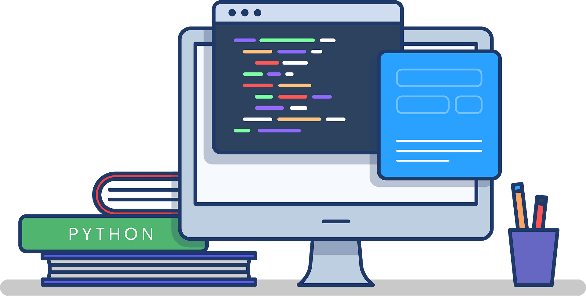

Programmer
creazilla.com What Does Programmer Mean?
A programmer is an individual that writes/creates computer software or applications by giving the computer specific programming instructions. Most programmers have a broad computing and coding background across multiple programming languages and platforms, including Structured Query Language (SQL), Perl, Extensible Markup Language (XML), PHP, HTML, C, C++ and Java.
A programmer also may specialize in one or more computing fields, like database, security or software/firmware/mobile/Web development. These individuals are instrumental to the development of computer technology and the field of computing.
creazilla.com
Techopedia Explains Programmer
A programmer may work in a variety of settings, ranging from small firms to large IT companies, and be involved in any of the components related to system programming, including:
- System conception and design
- System development
- Writing code
- Testing
- Debugging
- Implementation
- Maintenance
- System instructions or programs
A programmer works according to the specifications provided by a systems analyst or senior programmer. After completing a program design, a programmer converts the design into a series of codes or instructions that the computer can run and execute, making use of a specific programming language and required platforms. After converting the design to code, a programmer runs the code and looks for bugs and errors. If a programmer finds code errors, appropriate corrections are applied, and the program is re-run. The programmer tries to perfect the code through a process of trial and error until reaching an acceptable error level and continues this process throughout the life of a program, as software and programs are never truly perfect or finished.techopedia.com
The Way Of The Program
"The single most important skill for a computer scientist is problem solving."
Problem solving means the ability to formulate problems, think creatively about solutions, and express a solution clearly and accurately. As it turns out, the process of learning to program is an excellent opportunity to practice problem solving skills. That's why this chapter is called, “The way of the program”.
educative.io
Programming Language
Natural languages
Natural languages are the languages people speak, such as English, Spanish, and French. They were not designed by people (although people try to impose some order on them); they evolved naturally.
Formal languages
Formal languages are languages that are designed by people for specific applications. For example, the notation that mathematicians use is a formal language that is particularly good at denoting relationships among numbers and symbols. Chemists use a formal language to represent the chemical structure of molecules. And most importantly:
Programming languages
Programming languages are formal languages that have been designed to express computations.
Python
What Is Python?
Python is an interpreted, object-oriented, high-level programming language with dynamic semantics. Its high-level built in data structures, combined with dynamic typing and dynamic binding, make it very attractive for Rapid Application Development, as well as for use as a scripting or glue language to connect existing components together. Python's simple, easy to learn syntax emphasizes readability and therefore reduces the cost of program maintenance. Python supports modules and packages, which encourages program modularity and code reuse. The Python interpreter and the extensive standard library are available in source or binary form without charge for all major platforms, and can be freely distributed.
Often, programmers fall in love with Python because of the increased productivity it provides. Since there is no compilation step, the edit-test-debug cycle is incredibly fast. Debugging Python programs is easy: a bug or bad input will never cause a segmentation fault. Instead, when the interpreter discovers an error, it raises an exception. When the program doesn't catch the exception, the interpreter prints a stack trace. A source level debugger allows inspection of local and global variables, evaluation of arbitrary expressions, setting breakpoints, stepping through the code a line at a time, and so on. The debugger is written in Python itself, testifying to Python's introspective power. On the other hand, often the quickest way to debug a program is to add a few print statements to the source: the fast edit-test-debug cycle makes this simple approach very effective.
See also some comparisons between Python and other languages.python.org
History of Python
Python is a widely-used general-purpose, high-level programming language. It was initially designed by Guido van Rossum in 1991 and developed by Python Software Foundation. It was mainly developed for emphasis on code readability, and its syntax allows programmers to express concepts in fewer lines of code.
In the late 1980s, history was about to be written. It was that time when working on Python started. Soon after that, Guido Van Rossum began doing its application-based work in December of 1989 at Centrum Wiskunde & Informatica (CWI) which is situated in the Netherlands. It was started firstly as a hobby project because he was looking for an interesting project to keep him occupied during Christmas. The programming language in which Python is said to have succeeded is ABC Programming Language, which had interfacing with the Amoeba Operating System and had the feature of exception handling. He had already helped to create ABC earlier in his career and he had seen some issues with ABC but liked most of the features. After that what he did was really very clever. He had taken the syntax of ABC, and some of its good features. It came with a lot of complaints too, so he fixed those issues completely and had created a good scripting language that had removed all the flaws. The inspiration for the name came from BBC's TV Show - 'Monty Python's Flying Circus', as he was a big fan of the TV show and also he wanted a short, unique and slightly mysterious name for his invention and hence he named it Python! He was the “Benevolent dictator for life” (BDFL) until he stepped down from the position as the leader on 12th July 2018. For quite some time he used to work for Google, but currently, he is working at Dropbox.
The language was finally released in 1991. When it was released, it used a lot fewer codes to express the concepts, when we compare it with Java, C++ & C. Its design philosophy was quite good too. Its main objective is to provide code readability and advanced developer productivity. When it was released it had more than enough capability to provide classes with inheritance, several core data types exception handling and functions.
Following are the illustrations of different versions of Python along with the timeline.
geeksforgeeks.org
# Python 3.10.4 is the latest stable version. #
The two of the most used versions has to Python 2.x & 3.x. There is a lot of competition between the two and both of them seem to have quite a number of different fanbases.
For various purposes such as developing, scripting, generation, and software testing, this language is utilized. Due to its elegance and simplicity, top technology organizations like Dropbox, Google, Quora, Mozilla, Hewlett-Packard, Qualcomm, IBM, and Cisco have implemented Python.
Python has come a long way to become the most popular coding language in the world. Python has just turned 30 and just recently at pycon22(python confrence) a new feature was released by Anaconda foundation it's known as pyscript with this now python can be written and run in the browser like javascript which was previously not possible, but it still has that unknown charm & X factor which can be clearly seen from the fact that Google users have consistently searched for Python much more than they have searched for Kim Kardashian, Donald Trump, Tom Cruise, etc.
Python has been an inspiration for many other coding languages such as Ruby, Cobra, Boo, CoffeeScript ECMAScript, Groovy, Swift Go, OCaml, Julia, etc.geeksforgeeks.org
Python Cross-Platform

Python Features
- Uses an elegant syntax, making the programs you write easier to read.
- Is an easy-to-use language that makes it simple to get your program working. This makes Python ideal for prototype development and other ad-hoc programming tasks, without compromising maintainability.
- Comes with a large standard library that supports many common programming tasks such as connecting to web servers, searching text with regular expressions, reading and modifying files.
- Python's interactive mode makes it easy to test short snippets of code. There's also a bundled development environment called IDLE.
- Is easily extended by adding new modules implemented in a compiled language such as C or C++.
- Can also be embedded into an application to provide a programmable interface.
- Runs anywhere, including Mac OS X, Windows, Linux, and Unix, with unofficial builds also available for Android and iOS.
- Is free software in two senses. It doesn't cost anything to download or use Python, or to include it in your application. Python can also be freely modified and re-distributed, because while the language is copyrighted it's available under an open source license.
Phython Language Features
- A variety of basic data types are available: numbers (floating point, complex, and unlimited-length long integers), strings (both ASCII and Unicode), lists, and dictionaries.
- Python supports object-oriented programming with classes and multiple inheritance.
- Code can be grouped into modules and packages.
- The language supports raising and catching exceptions, resulting in cleaner error handling.
- Data types are strongly and dynamically typed. Mixing incompatible types (e.g. attempting to add a string and a number) causes an exception to be raised, so errors are caught sooner.
- Python contains advanced programming features such as generators and list comprehensions.
- Python's automatic memory management frees you from having to manually allocate and free memory in your code.
Multi-Paradigm Programming
Python Ubiquity
Python is everywhere
- Web Scripting
- 3D Modelling (Blender)
- Desktop Applications
- Games (Pygame)
- Scientific (ScyPy, Numpy)
Python Editions
- CPython : Classic Python
- Jython : Java Python able to blend with Java
- Iron Python : Widows Python work with .Net
- PyPy : Compile Python the fastest.
Why Python?
Comparing Python To Other Languages
Disclaimer : This essay was written sometime in 1997. It shows its age.
It is retained
here merely as a historical
artifact. -- Guido van
Rossum
Python is often compared to other interpreted languages such as Java, JavaScript, Perl, Tcl, or Smalltalk. Comparisons to C++, Common Lisp and Scheme can also be enlightening. In this section I will briefly compare Python to each of these languages. These comparisons concentrate on language issues only. In practice, the choice of a programming language is often dictated by other real-world constraints such as cost, availability, training, and prior investment, or even emotional attachment. Since these aspects are highly variable, it seems a waste of time to consider them much for this comparison.python.org
print('Hello world!')Java
Python programs are generally expected to run slower than Java programs, but they also take much less time to develop. Python programs are typically 3-5 times shorter than equivalent Java programs. This difference can be attributed to Python's built-in high-level data types and its dynamic typing. For example, a Python programmer wastes no time declaring the types of arguments or variables, and Python's powerful polymorphic list and dictionary types, for which rich syntactic support is built straight into the language, find a use in almost every Python program. Because of the run-time typing, Python's run time must work harder than Java's. For example, when evaluating the expression a+b, it must first inspect the objects a and b to find out their type, which is not known at compile time. It then invokes the appropriate addition operation, which may be an overloaded user-defined method. Java, on the other hand, can perform an efficient integer or floating point addition, but requires variable declarations for a and b, and does not allow overloading of the + operator for instances of user-defined classes.
For these reasons, Python is much better suited as a "glue" language, while Java is better characterized as a low-level implementation language. In fact, the two together make an excellent combination. Components can be developed in Java and combined to form applications in Python; Python can also be used to prototype components until their design can be "hardened" in a Java implementation. To support this type of development, a Python implementation written in Java is under development, which allows calling Python code from Java and vice versa. In this implementation, Python source code is translated to Java bytecode (with help from a run-time library to support Python's dynamic semantics).
public class HelloWord { public static void main(String[] args) { System.out.println("Hello World!"); } }
Javascript
Python's "object-based" subset is roughly equivalent to JavaScript. Like JavaScript (and unlike Java), Python supports a programming style that uses simple functions and variables without engaging in class definitions. However, for JavaScript, that's all there is. Python, on the other hand, supports writing much larger programs and better code reuse through a true object-oriented programming style, where classes and inheritance play an important role.
console.log('Hello World!)
Perl
Python and Perl come from a similar background (Unix scripting, which both have long outgrown), and sport many similar features, but have a different philosophy. Perl emphasizes support for common application-oriented tasks, e.g. by having built-in regular expressions, file scanning and report generating features. Python emphasizes support for common programming methodologies such as data structure design and object-oriented programming, and encourages programmers to write readable (and thus maintainable) code by providing an elegant but not overly cryptic notation. As a consequence, Python comes close to Perl but rarely beats it in its original application domain; however Python has an applicability well beyond Perl's niche.
print('Hello World!');
C++
Almost everything said for Java also applies for C++, just more so: where Python code is typically 3-5 times shorter than equivalent Java code, it is often 5-10 times shorter than equivalent C++ code! Anecdotal evidence suggests that one Python programmer can finish in two months what two C++ programmers can't complete in a year. Python shines as a glue language, used to combine components written in C++.
#include < iostream > using namespace std; int main() { cout << "hello World!"; return 0; }
Common Lisp and Scheme
These languages are close to Python in their dynamic semantics, but so different in their approach to syntax that a comparison becomes almost a religious argument: is Lisp's lack of syntax an advantage or a disadvantage? It should be noted that Python has introspective capabilities similar to those of Lisp, and Python programs can construct and execute program fragments on the fly. Usually, real-world properties are decisive: Common Lisp is big (in every sense), and the Scheme world is fragmented between many incompatible versions, where Python has a single, free, compact implementation.
Most Popular Programming, Scripting, and Aarkup Languages
survey.stackoverflow.co
Ratings Programming Languages
tiobe.com
Compiler VS Interpreter
Key Difference between Compiler and Interpreter
- Compiler transforms code written in a high-level programming language into the machine code at once before the program runs, whereas an Interpreter converts each high-level program statement, one by one, into the machine code, during program run.
- Compiled code runs faster, while interpreted code runs slower.
- Compiler displays all errors after compilation, on the other hand, the Interpreter displays errors of each line one by one.
- Compiler is based on translation linking-loading model, whereas the Interpreter is based on Interpretation Method.
- Compiler takes an entire program, whereas the Interpreter takes a single line of code.
What is Compiler?
A compiler is a computer program that transforms code written in a high-level programming language into the machine code. It is a program which translates the human-readable code to a language a computer processor understands (binary 1 and 0 bits). The computer processes the machine code to perform the corresponding tasks.
A compiler should comply with the syntax rule of that programming language in which it is written. However, the compiler is only a program and can not fix errors found in that program. So, if you make a mistake, you need to make changes in the syntax of your program. Otherwise, it will not compile.
What is Interpreter?
An interpreter is a computer program, which converts each high-level program statement into the machine code. This includes source code, pre-compiled code, and scripts. Both compiler and interpreters do the same job which is converting higher level programming language to machine code. However, a compiler will convert the code into machine code (create an exe) before program run. Interpreters convert code into machine code when the program is run.
Difference between Compiler and Interpreter
Here are important difference between Compiler and Interpreter:
| Basis of difference | Compiler | Interpreter |
|---|---|---|
| Programming Steps |
|
|
| Advantage | The program code is already translated into machine code. Thus, it code execution time is less. | Interpreters are easier to use, especially for beginners. |
| Disadvantage | You can't change the program without going back to the source code. | Interpreted programs can run on computers that have the corresponding interpreter. |
| Machine code | Store machine language as machine code on the disk | Not saving machine code at all. |
| Running time | Compiled code run faster | Interpreted code run slower |
| Model | It is based on language translation linking-loading model. | It is based on Interpretation Method. |
| Program generation | Generates output program (in the form of exe) which can be run independently from the original program. | Do not generate output program. So they evaluate the source program at every time during execution. |
| Execution | Program execution is separate from the compilation. It performed only after the entire output program is compiled. | Program Execution is a part of Interpretation process, so it is performed line by line. |
| Memory requirement | Target program execute independently and do not require the compiler in the memory. | The interpreter exists in the memory during interpretation. |
| Best suited for | Bounded to the specific target machine and cannot be ported. C and C++ are a most popular programming language which uses compilation model. | For web environments, where load times are important. Due to all the exhaustive analysis is done, compiles take relatively larger time to compile even small code that may not be run multiple times. In such cases, interpreters are better. |
| Code Optimization | The compiler sees the entire code upfront. Hence, they perform lots of optimizations that make code run faster | Interpreters see code line by line, and thus optimizations are not as robust as compilers |
| Dynamic Typing | Difficult to implement as compilers cannot predict what happens at turn time. | Interpreted languages support Dynamic Typing |
| Usage | It is best suited for the Production Environment | It is best suited for the program and development environment. |
| Error execution | Compiler displays all errors and warning at the compilation time. Therefore, you can't run the program without fixing errors | The interpreter reads a single statement and shows the error if any. You must correct the error to interpret next line. |
| Input | It takes an entire program | It takes a single line of code. |
| Output | Compliers generates intermediate machine code. | Interpreter never generate any intermediate machine code. |
| Errors | Display all errors after, compilation, all at the same time. | Displays all errors of each line one by one. |
| Pertaining Programming languages |
C, C++, C#, Scala, Java all use complier. | PHP, Perl, Ruby uses an interpreter. |
Role of Compiler
- Compliers reads the source code, outputs executable code
- Translates software written in a higher-level language into instructions that computer can understand. It converts the text that a programmer writes into a format the CPU can understand.
- The process of compilation is relatively complicated. It spends a lot of time analyzing and processing the program.
- The executable result is some form of machine-specific binary code.
Role of Interpreter
- The interpreter converts the source code line-by-line during RUN Time.
- Interpret completely translates a program written in a high-level language into machine level language.
- Interpreter allows evaluation and modification of the program while it is executing.
- Relatively less time spent for analyzing and processing the program
- Program execution is relatively slow compared to compiler
HIGH-LEVEL LANGUAGES
High-level languages, like C, C++, JAVA, etc., are very near to English. It makes programming process easy. However, it must be translated into machine language before execution. This translation process is either conducted by either a compiler or an interpreter. Also known as source code.
MACHINE CODE
Machine languages are very close to the hardware. Every computer has its machine language. A machine language programs are made up of series of binary pattern. (Eg. 110110) It represents the simple operations which should be performed by the computer. Machine language programs are executable so that they can be run directly.
OBJECT CODE
On compilation of source code, the machine code generated for different processors like Intel, AMD, and ARM is different. To make code portable, the source code is first converted to Object Code. It is an intermediary code (similar to machine code) that no processor will understand. At run time, the object code is converted to the machine code of the underlying platform.
Java is both Compiled and Interpreted.
To exploit relative advantages of compilers are interpreters some programming language like Java are both compiled and interpreted. The Java code itself is compiled into Object Code. At run time, the JVM interprets the Object code into machine code of the target computer.guru99.com